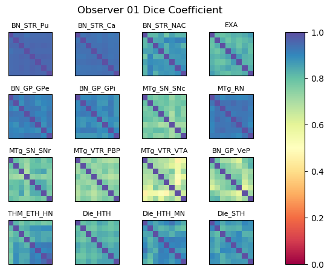
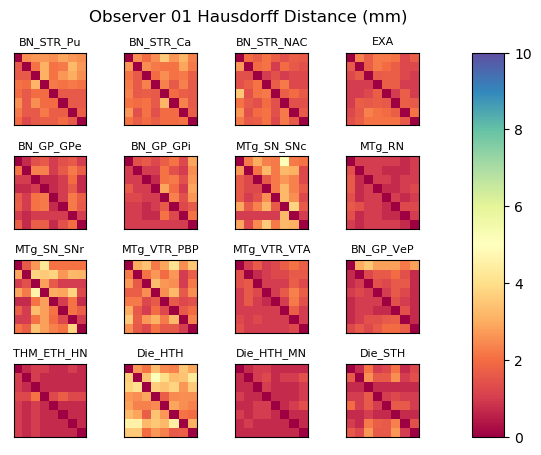

|  |  |
|
Within-observer Dice coefficient and Hausdorff distance matrices for each atlas label. The matrix rows and columns represent the first and second templates in a pairwise comparison. |
| Label Name | Label # | Mean Dice | Mean Hausdorff (mm) | Unfinished Templates |
| BN_STR_Pu | 201 | 0.952 | 2.323 | [] |
| BN_STR_Ca | 202 | 0.937 | 2.210 | [] |
| BN_STR_NAC | 203 | 0.858 | 1.571 | [] |
| EXA | 206 | 0.822 | 1.615 | [] |
| BN_GP_GPe | 207 | 0.911 | 1.373 | [] |
| BN_GP_GPi | 208 | 0.891 | 1.789 | [] |
| MTg_SN_SNc | 209 | 0.765 | 2.381 | [] |
| MTg_RN | 210 | 0.924 | 0.931 | [] |
| MTg_SN_SNr | 211 | 0.782 | 2.274 | [] |
| MTg_VTR_PBP | 212 | 0.733 | 2.328 | [] |
| MTg_VTR_VTA | 213 | 0.652 | 1.369 | [] |
| BN_GP_VeP | 214 | 0.723 | 1.611 | [] |
| THM_ETH_HN | 400 | 0.850 | 0.833 | [] |
| Die_HTH | 410 | 0.820 | 2.992 | [] |
| Die_HTH_MN | 411 | 0.870 | 0.861 | [] |
| Die_STH | 420 | 0.862 | 1.221 | [] |